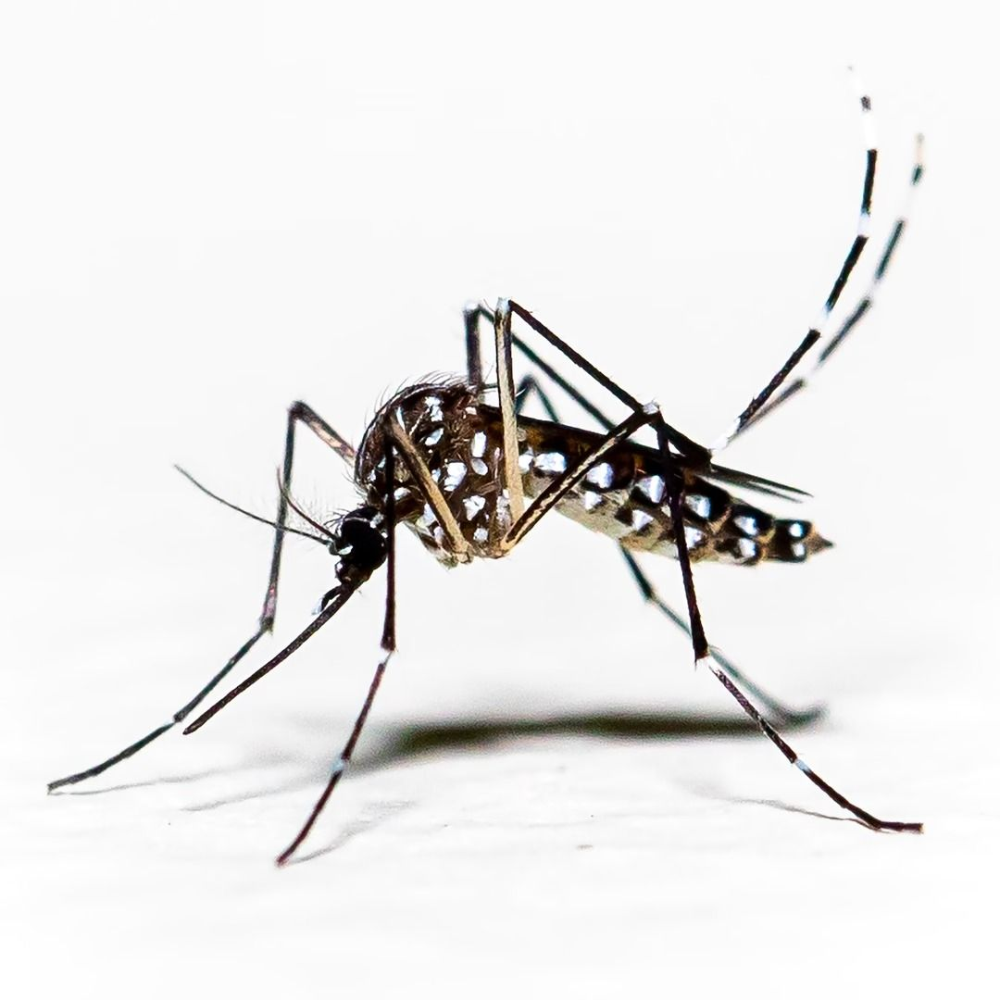

Descripción general
Los mosquitos son insectos pertenecientes al orden Diptera y a la familia Culicidae. Su ciclo biológico está inexorablemente ligado a la presencia de agua acumulada o estancada, indispensable para el desarrollo de sus fases inmaduras (huevo, larva y pupa).
Mientras los machos se alimentan de savia y néctar vegetal, las hembras son hematófagas y requieren las proteínas de la sangre para madurar sus huevos. Esta necesidad las convierte en insectos molestos por sus picaduras y en vectores biológicos de relevancia epidemiológica en Uruguay y la región.
Variedades presentes en Uruguay
Las distintas especies presentan hábitats de reproducción y patrones horarios muy característicos:
Culex pipiens (Mosquito común o doméstico)
El mosquito más habitual en los hogares urbanos durante las noches. Se reproduce con facilidad en aguas estancadas ricas en materia orgánica: zanjas, cámaras sépticas abiertas, piscinas abandonadas y charcos residuales.
Aedes aegypti (Mosquito transmisor del dengue)
Especie de color oscuro con marcas blancas características en forma de lira en el tórax y bandas plateadas en las patas. Adaptado estrictamente a los entornos domésticos y peridomésticos urbanos. Se reproduce en pequeños recipientes artificiales con agua limpia o semilimpia (platillos de macetas, botellas, neumáticos, canaletas).
Importancia sanitaria: Posee capacidad vectorial comprobada para la transmisión de arbovirus como dengue, zika y fiebre chikungunya.
Aedes spp. (Mosquitos de inundación)
Especies adaptadas a terrenos inundables o pastizales bajos. Sus huevos permanecen adheridos al suelo seco durante meses hasta que las lluvias intensas los cubren de agua, desencadenando eclosiones masivas y simultáneas.
Ochlerotatus spp. (Mosquitos de humedales y bañados)
Asociados a zonas de humedales, riberas de arroyos y bañados. Son picadores agresivos en horarios crepusculares y diurnos en áreas recreativas o residencias cercanas a cuerpos de agua.
Señales de presencia según la especie
Identificar la variedad presente permite orientar de inmediato la búsqueda del foco:
- Culex pipiens: Intensa actividad nocturna, zumbido característico al volar cerca del oído al dormir y presencia en proximidades de desagües o cámaras de inspección.
- Aedes aegypti: Picaduras durante el día (especialmente a primeras horas de la mañana y al caer la tarde), vuelo silencioso a nivel de tobillos y visualización de marcas blancas en las patas o larvas activas nadando en recipientes con agua en patios.
- Aedes de inundación: Aparición súbita e invasiva de densas poblaciones de mosquitos 48 a 72 horas después de tormentas o temporales de lluvia.
- Ochlerotatus: Frecuencia elevada de picaduras en jardines arbolados o barrios cerrados linderos a zonas bajas o humedales.
¿Por qué resulta difícil controlarlos?
Cualquier objeto mínimo capaz de retener apenas medio centímetro de agua durante una semana (una tapita plástica, una lona arrugada, una canaleta con hojas secas) es suficiente para que una hembra deposite decenas de huevos y prospere una nueva camada.
Las aplicaciones insecticidas en aerosol sólo abaten a los mosquitos en vuelo durante unos instantes, pero no afectan a los criaderos ocultos en patios linderos ni a las larvas sumergidas.
Plan de acción de FumiTotal
Inspección peridoméstica y ambiental
Relevamos patios, canteros, desagües pluviales, canaletas y sectores con vegetación densa para identificar micro-recipientes y fuentes de acumulación de agua.
Identificación de criaderos activos
Diferenciamos entre criaderos artificiales eliminables y cuerpos de agua fijos que requieren tratamiento larvicida.
Tratamiento integral de áreas afectadas
Aplicación de formulaciones profesionales combinadas: acción residual en la vegetación donde descansan los adultos y tratamiento focalizado en drenajes.
Prevención y descacharrización técnica
Asesoramos al cliente en la eliminación física de fuentes de retención pluvial y colocación de mallas en rejillas para evitar la reactivación de criaderos.